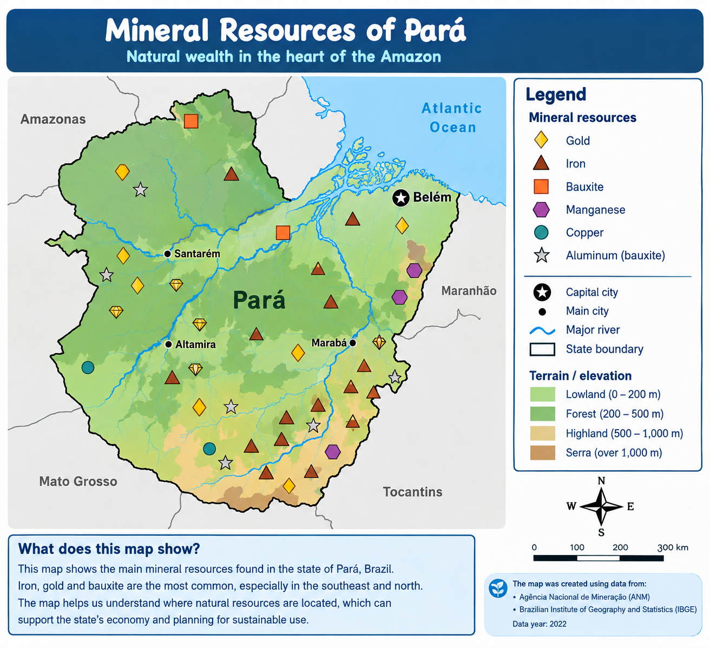

COLOMBIA

12345678Where do people live?
Population and settlement
Show density, distribution or major cities.
Example: shade municipalities low / medium / high.
Hot, cold, or in between?
Climate and geography
Show temperature, rainfall, elevation or ecosystems.
Example: a color gradient for temperature.
What lies beneath the land?
Natural resources
Show minerals, coal, gold, oil or other resources.
Example: symbols for deposits, production sites and mining.
Who are the people of this land?
Indigenous communities and cultural geography
Show officially documented territories, reservations and resguardos.
Use respectful words and reliable sources.
Nature worth protecting
Environment and biodiversity
Show national parks, protected areas, rivers or forests.
Example: shaded areas for protected zones.
What does this department produce?
Agriculture and the economy
Show crops, livestock or other major activities.
Example: symbols for coffee, rice, cacao or bananas.
Our department is ______. Our theme is ______.
Our map will show ______ in ______.
Our map shows ______ in ______.
______ is higher/lower/more/fewer in ______ than in ______.
This pattern can affect ______ because ______.
Example (a population map): The map shows population density in ______. The population is concentrated in a few urban areas, while other areas have lower density. This pattern can affect where roads, schools and hospitals are built.
MAPMAKERS!